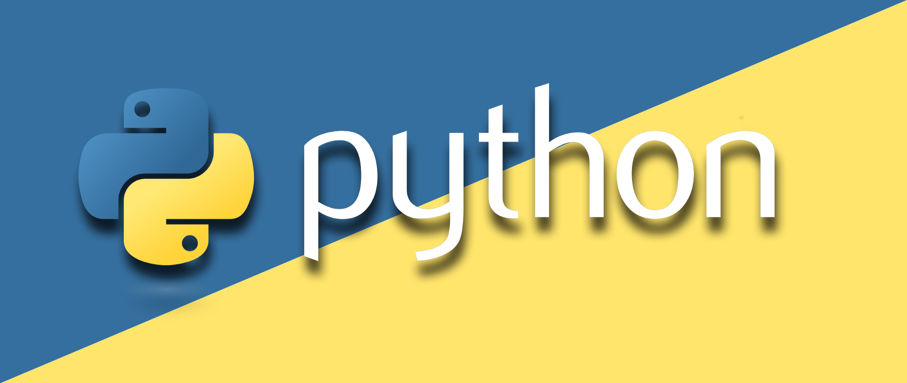

Algunos lenguajes
que se utilizan en
POO

Javascript
Javascript es un lenguaje de programación interpretado, dialecto del estándar ECMAScript. Se define como orientado a objetos, basado en prototipos, imperativo, débilmente tipado y dinámico.
Ver siguiente video de como hacer un objeto basico en JavaScript
ver video

Python
Python es un lenguaje de programación ampliamente utilizado en las aplicaciones web y el desarrollo de software, y es eficiente y fácil de aprender.
ver video